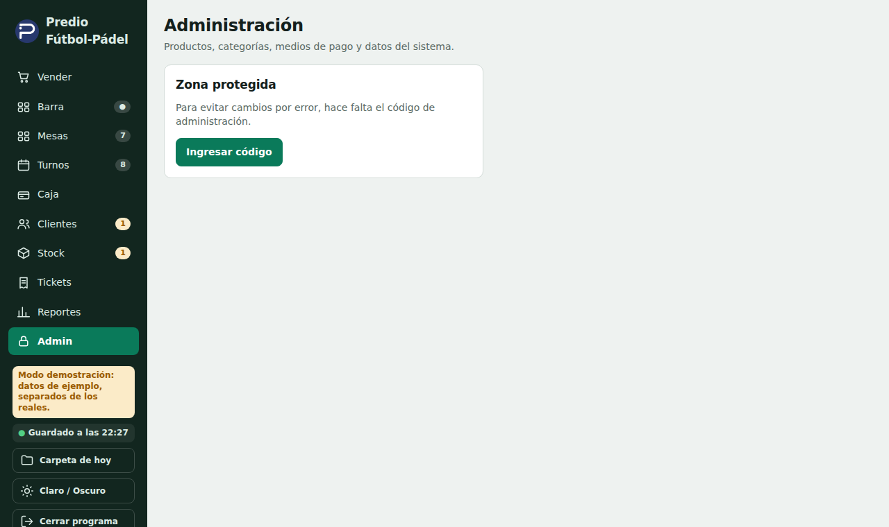

Manual del dueño
Instalación, administración, copias, nube y reportes
Caja del Predio
1. Instalar y actualizar
- Bajá el instalador Instalar-Caja-del-Predio-X.Y.Z.exe desde la página de versiones de GitHub (Cerbanc/PREDIOFP → Releases).
- Ejecutalo. Si Windows avisa «protegió su PC», tocá Más información → Ejecutar de todas formas. No pide ser administrador.
- Quedan dos íconos: Caja del Predio (el real) y Caja del Predio (demostración), con datos de ejemplo, para practicar sin tocar nada real.
- Actualizar: cuando hay una versión nueva aparece un cartel arriba con Actualizar ahora. Se baja una sola vez, se cierra y se vuelve a abrir solo. Tus datos no se tocan.
Todo vive en la carpeta C:\Predio. Ahí están la base de datos, las copias, los Excel de cada día y la configuración. Nunca la muevas con el programa abierto.
2. El primer día: cargar productos y stock
- Entrá a Admin (código de fábrica 1234; cambialo en Admin → Datos y seguridad).
- La primera pestaña es la Planilla: escribí o pegá desde Excel una fila por producto (nombre, categoría, tipo, precio, costo, stock, mínimo). También se puede cargar un archivo de Excel; hay una plantilla vacía para bajar.
- Lo que está en rojo hay que corregirlo. Guardar se habilita cuando no queda nada en rojo, y se guarda todo junto o nada.

Tipos de producto
- Producto: lleva su stock (gaseosas, golosinas).
- Receta: se arma con insumos (pancho = salchicha + pan).
- Servicio: sin stock (café, minutas).
- Insumo: solo se usa dentro de recetas.
Para borrar un producto: Stock → Eliminar. Si solo querés que no aparezca en la caja, usá Ocultar.
3. Cargar stock con la foto de un remito
- Sacá una clave gratis en aistudio.google.com/apikey (con una cuenta de Google).
- Abrí C:\Predio\configuracion.json con el Bloc de notas y pegá la clave entre las comillas de gemini_clave. Guardá.
- En Stock → Cargar por foto de remito, elegí la foto. El programa lee los renglones y los empareja con tus productos, aunque el nombre esté escrito distinto.
- Revisá la tabla: verde = seguro, amarillo = revisar, rojo = elegí el producto a mano (o escribilo/omitilo). Recién con Cargar al stock se suma.
La foto se manda a Google para leerla. Con el plan gratis tiene límites por minuto y por día: si te avisa que se acabó el cupo, esperá y probá de nuevo.
4. Registro de todo lo que cambia
Admin → Todo lo que cambió muestra, solo, cada cosa que se agrega, se cambia o se borra: ítems sacados de una cuenta, movimientos de caja, ajustes de stock, cambios de precio, turnos, descuentos y anulaciones, con quién y cuándo. Lo importante va marcado. No se puede borrar ni editar.
5. Carpeta de cada día
Dentro de C:\Predio\dias\AAAA-MM-DD el programa deja solo, sin que exportes nada:
- …_resumen.xlsx: ventas, detalle, caja, stock, turnos y cambios del día.
- …_registro.txt: todo lo que cambió ese día, en texto.
- …_agenda.xlsx: los turnos con el diseño de la planilla de papel, listo para imprimir en una hoja A4 apaisada (hoy y los próximos 7 días). Los fijos van en amarillo con (F). Las columnas $ y MP quedan vacías.
El botón Carpeta de hoy (abajo a la izquierda) abre esa carpeta.
6. Copias de seguridad
- Se hace una copia al abrir y otra al cerrar el programa. Se guardan 30 días.
- Admin → Datos y seguridad: Hacer una copia ahora y la lista con Restaurar (antes guarda otra copia de lo actual).
- Una vez por semana, copiá C:\Predio\copias a un pendrive o a Drive.
- Si la base se dañara, el programa lo detecta al abrir y vuelve a la última copia sana avisándote.
Si se rompe o se roba la PC: instalá el programa en otra, copiá la carpeta copias a C:\Predio\copias y restaurá la última desde Admin → Datos y seguridad.
7. Reportes desde el celular y turnos en la nube
El programa sube solo, cuando hay internet, el reporte del día y sincroniza los turnos con una página privada. Para activarlo, en C:\Predio\configuracion.json están los campos nube_url (la dirección de la página) y nube_token (la clave de la PC). En Admin → Datos y seguridad → Reportes en la nube está el botón Subir ahora para probar.
- Reportes (la dirección): Día, Semana, Mes y Fechas, con comparación contra el período anterior, cierres de caja y botón para bajar el Excel. Muestra «sin datos» en los días en que la PC no subió nada.
- Turnos (la dirección + /turnos): calendario para el celular con vista de día y de semana, búsqueda, recordatorios de mañana por WhatsApp y registro de quién cargó cada turno. La primera vez cada persona escribe su nombre y queda guardado en su celular.
- Las dos se pueden instalar como app en el celular (aparece un cartelito; en iPhone: Compartir → Agregar a pantalla de inicio).
- La clave de entrada es una sola. Cambiala por una larga cuando termines de probar.
8. Cierre de caja y diferencias
El cierre compara lo que debería haber con lo que contás, en efectivo y en cada medio digital. Se puede cerrar con diferencia; conviene dejar una nota. Para corregir antes de cerrar: Caja → revisar pagos → Corregir ticket. Si no aparece la causa, se registra una pérdida a mano. La página de reportes tiene un cuadro «De lo vendido a lo cobrado» que explica por qué el cobrado puede ser distinto del vendido (fiado, deudas pagadas, señas).
9. Nombre y logo
El logo es fijo. El nombre del negocio está en C:\Predio\personalizar\marca.json: cambialo con el Bloc de notas, guardá y apretá F5 en el programa.
10. Empezar en serio después de probar
Admin → Datos y seguridad → Restablecer → Borrar ventas e historial: hace una copia antes y pide escribir BORRAR. Se borran tickets, caja, movimientos, turnos y deudas; quedan productos con su stock, clientes, categorías, mesas y medios de pago.